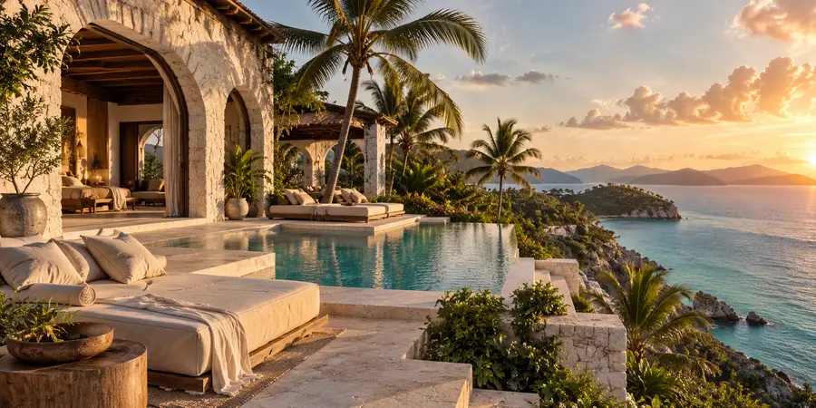
01
The Villas
Private suites tucked into the palm-lined rise, each opening toward the water.
A private shoreline, gardens, pools, and places to disappear for an afternoon.

Private suites tucked into the palm-lined rise, each opening toward the water.
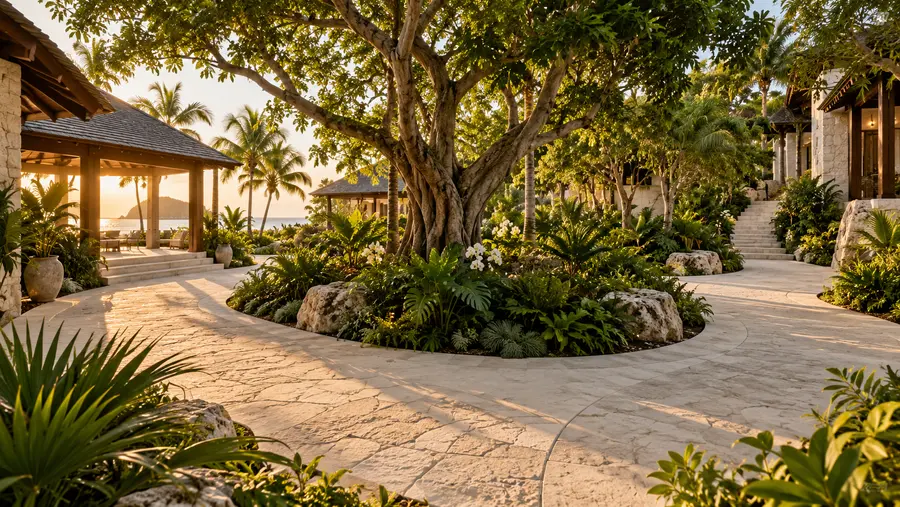
The island’s central gathering space: open paths, shaded terraces, and the route to everywhere else.
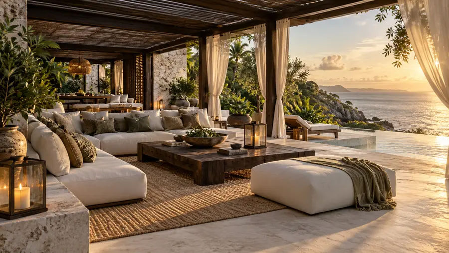
A low-lit retreat for slow afternoons, drinks, and the sound of the sea beyond the doors.
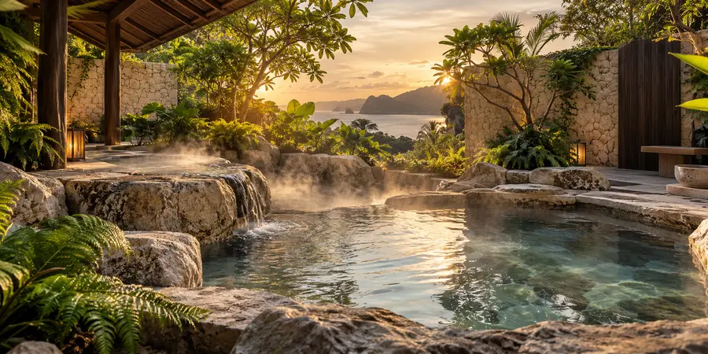
Warm stone pools set into the quiet side of the island, surrounded by greenery and steam.
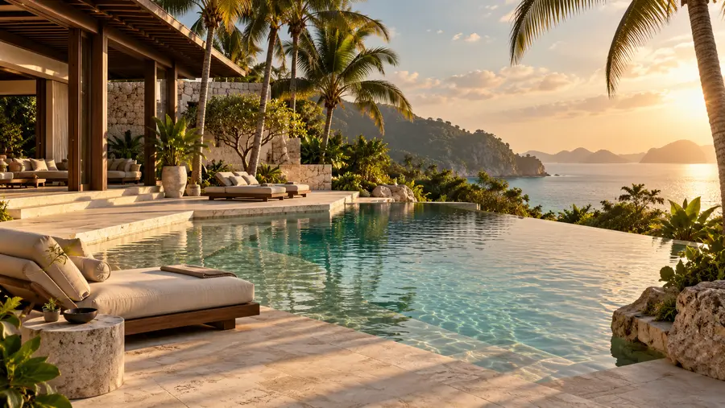
A freshwater pool at the island’s heart, framed by sun loungers and pale-stone decks.
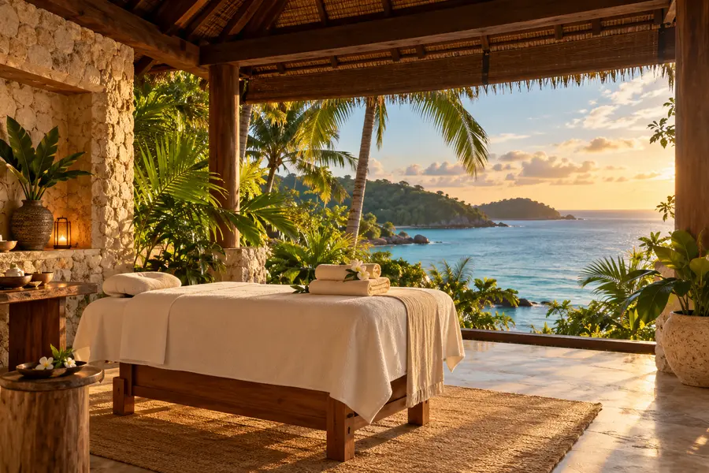
A quiet sanctuary for massages, restorative treatments, and unhurried care amid the island’s gardens.
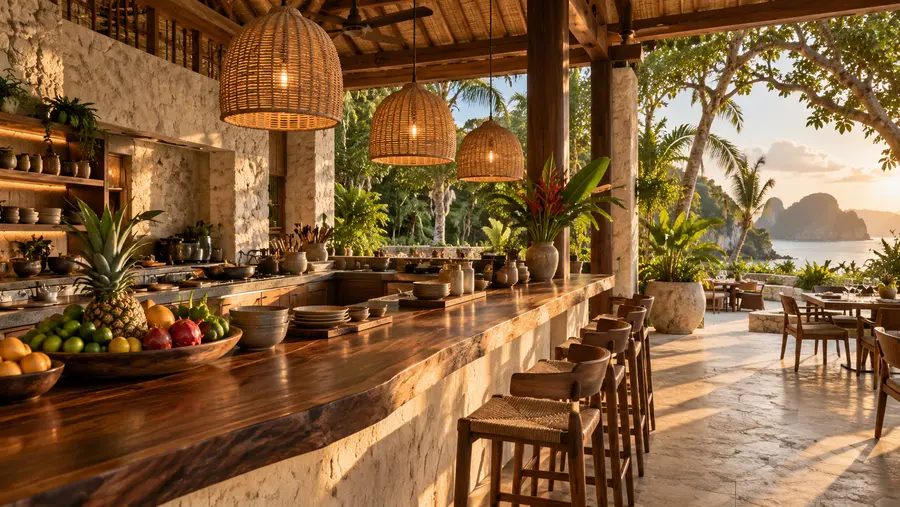
An all-day open kitchen for relaxed meals, fruit, and late-night refreshments.
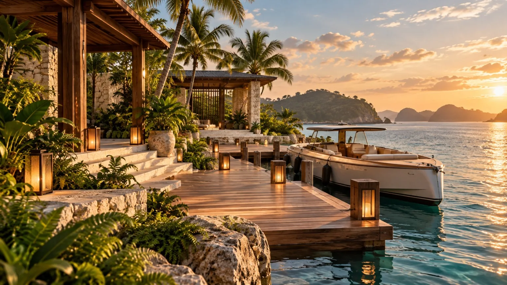
A sheltered private harbour where boats and yachts make landfall. Guests step onto the lantern-lit timber pier and are welcomed by their island guide.
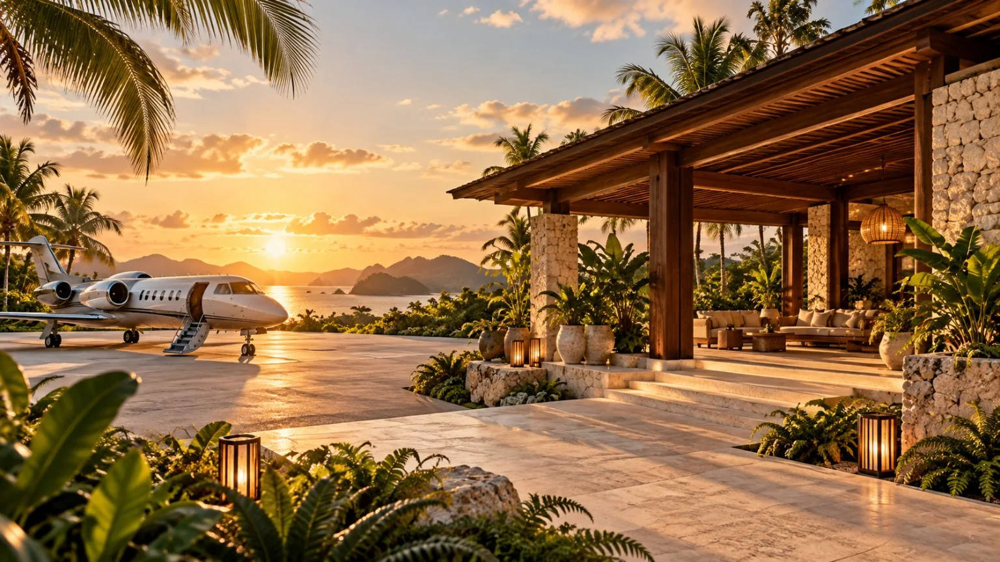
A secluded private aircraft landing area with an open-air reception pavilion, where guests arriving by plane are welcomed and escorted onward to their villas.
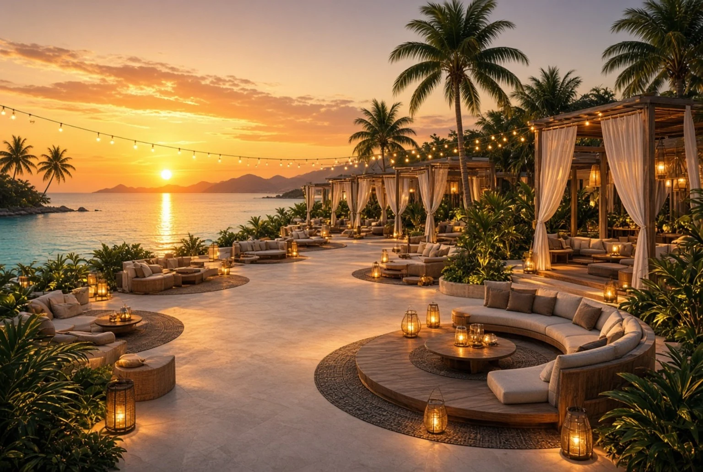
A lantern-lit beachfront retreat with private cabanas, sunset lounges and an open-air bar. Gather by the sea for music, drinks and warm evenings beneath the palms.
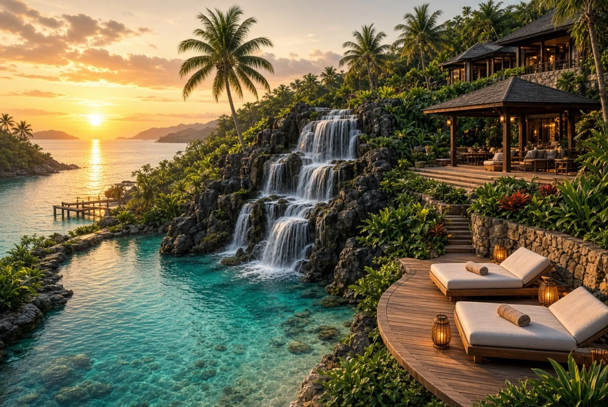
A secluded coastal retreat where cascading waterfalls spill into a crystal-clear lagoon, framed by tropical greenery, stone terraces, and quiet decks overlooking the sea.